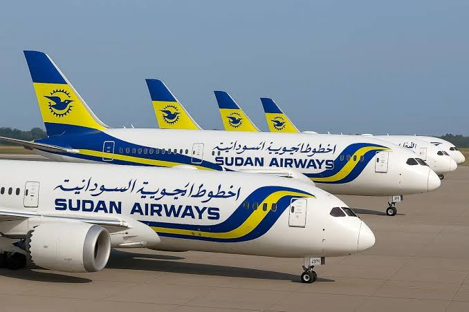
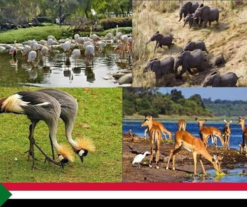
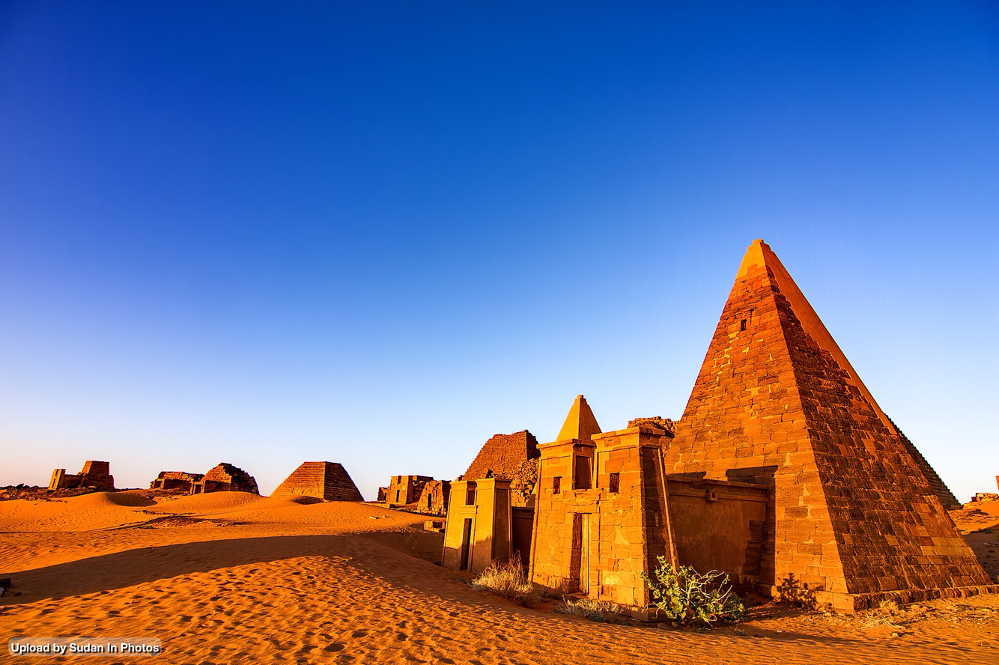
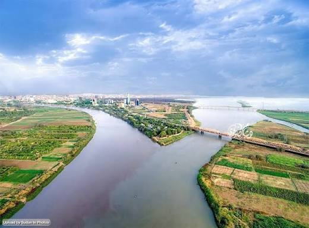
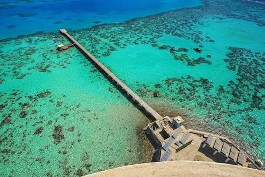

Discover
Sudan

السياحة في السودان من أهم القطاعات الاقتصادية التي تسهم في تعزيز الاقتصاد الوطني، حيث يتميز السودان بتنوعه الثقافي والطبيعي والتاريخي. وتضم البلاد العديد من المعالم السياحية الرائعة مثل الأهرامات والمعابد القديمة والحدائق الطبيعية والشواطئ الجميلة. كما يمكن للزوار الاستمتاع بالأنشطة الترفيهية المختلفة مثل الرحلات الصحراوية والغوص وركوب القوارب. وتعد السياحة في السودان فرصة رائعة للتعرف على ثقافة البلاد وتاريخها العريق.

إذا كنت من محبي الحيوانات والطبيعة والبرية، فإن محمية الدندر تقدم لك تجربة مميزة للتعرف على أندر أنواع الحيوانات البرية والعديد من أشكال الطيور المختلفة، وهي مناسبة للذين يبحثون عن متعة مشاهدة الطبيعة الخلابة.

يمتلك السودان أكبر عدد للأهرامات في العالم، حيث تعد من أعظم الآثار عالمياً والتي بنيت على يد ملوك كوش القدماء. تقع في منطقة مروي وتعتبر من أعظم الوجهات السياحية لمحي الآثار والمناطق التاريخية.

تعد جزيرة توتي من أفضل الأماكن لرؤية أطول نهر في العالم يلتقي بأخيه في ظاهرة علمية مذهلة، حيث يقترن النيل الأبيض مع الأزرق من غير أن يمتزجا. وتمثل جزيرة توتي وجهة سياحية ممتازة للذين يرغبون في رؤية طبيعة خضراء مفعمة بالحيوية مع ممارسة أنشطة مثل الصيد والسباحة.

تعد شواطئ بورتسودان من أجمل الوجهات السياحية في السودان، حيث تتميز بمياه البحر الأحمر الصافية ورمالها الذهبية ومناظرها الطبيعية الخلابة. وهي المكان المثالي للاستمتاع بالسباحة والغوص والاسترخاء، لتمنح كل زائر تجربة لا تنسى وسط جمال الطبيعة.
